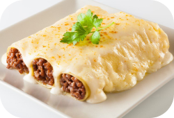
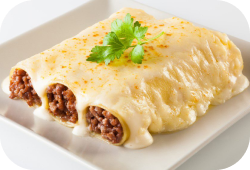

500 gramos de carne picada (mezcla de ternera y de cerdo)
Una cebolla
Un pimiento verde
Salsa de tomate casera o tomate frito de bote
20 placas de pasta
Queso rallado para gratinar
100 gramos de mantequilla
100 gramos de harina
Un chorrito de aceite de oliva
Un litro de leche
Especias al gusto
Sal